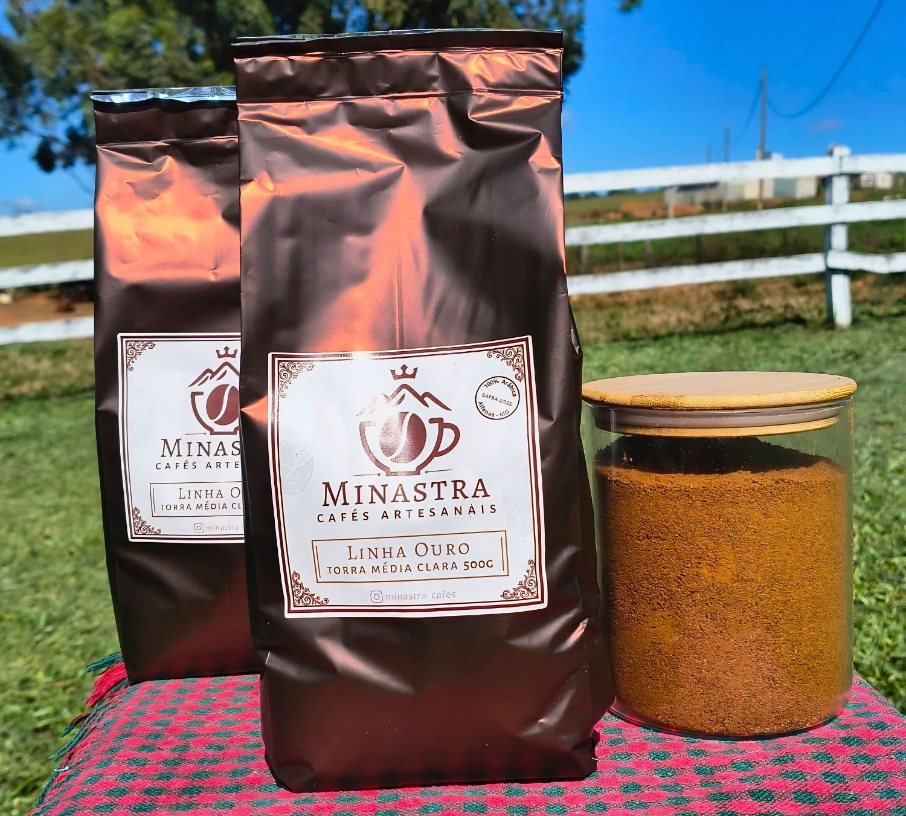
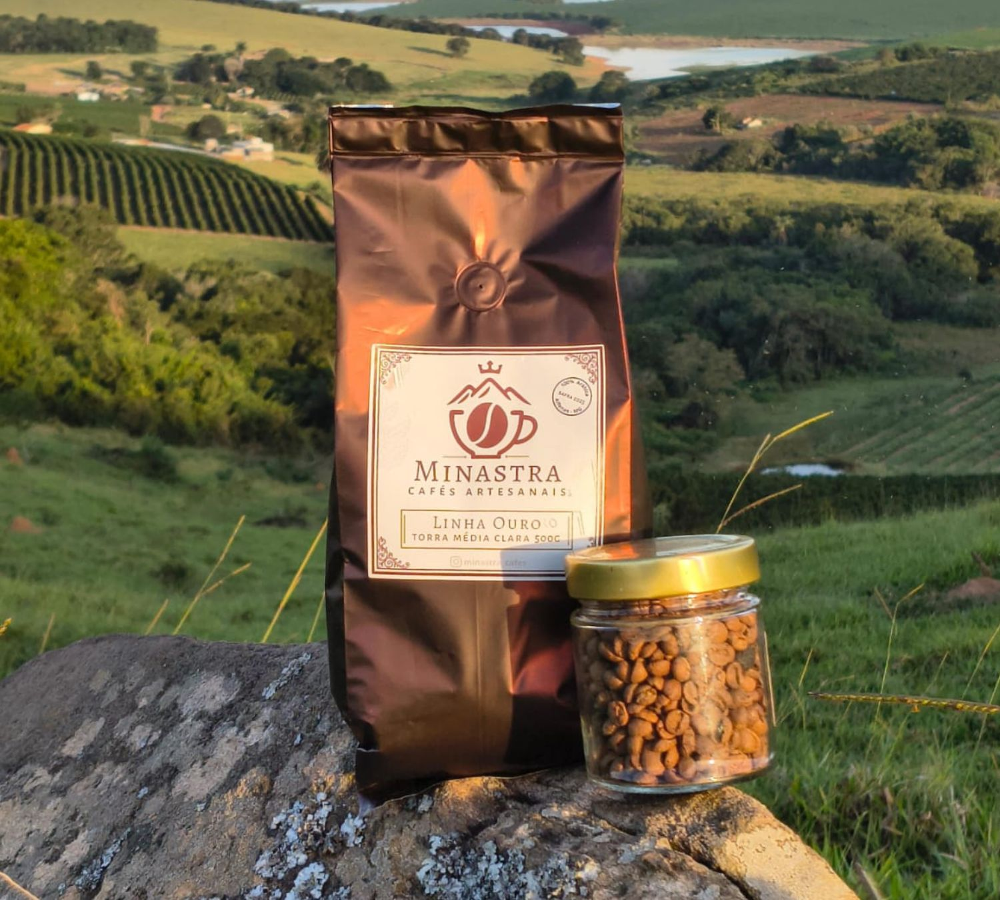
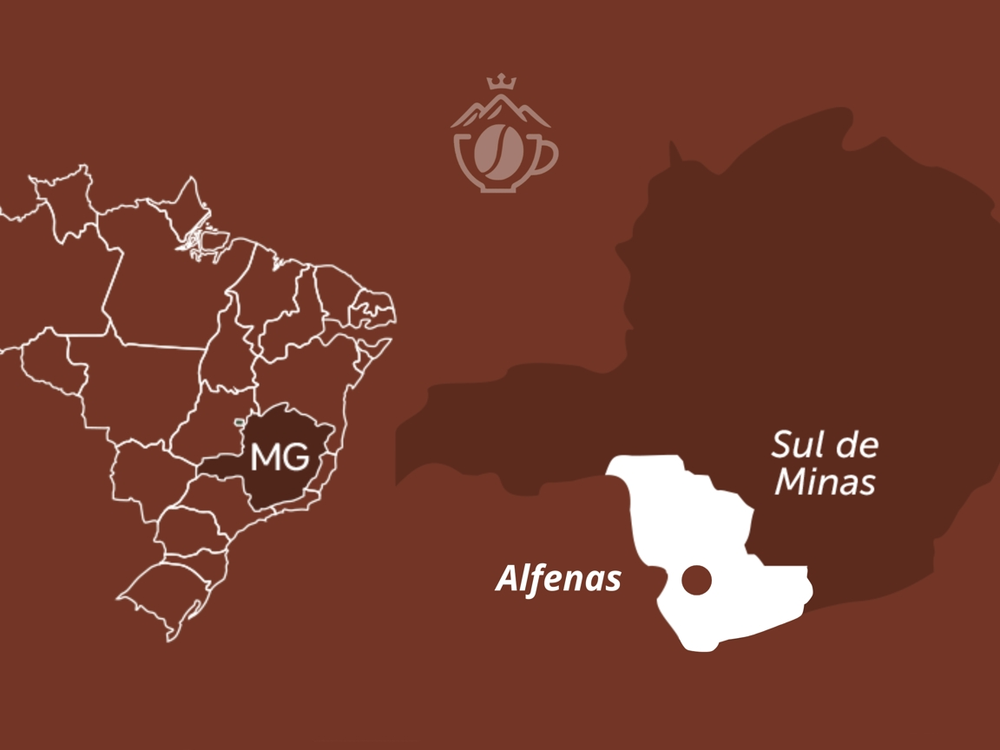

Origem transparente
Você conhece a fazenda, a variedade e as pessoas por trás de cada pacote.

Do cultivo à torra, cuidamos de cada etapa para entregar cafés 100% arábica, frescos e cheios de identidade.
Escolha pelo seu paladar
Perfis claros, compra rápida e café fresco. Selecione o que combina com você.
 Intenso
IntensoTorra média escura
Encorpado, naturalmente doce e perfeito para o café de todos os dias.

Mais suaveTorra média clara
Chocolate, mel e doçura natural em uma xícara leve e aromática.

Em grãosTorra média clara
Para moer na hora e preservar toda a complexidade, frescor e aroma.

Da terra para a xícara
A Minastra nasce de uma produção familiar em pequena escala. Cada lote carrega o cuidado de quem conhece a lavoura, respeita o tempo do grão e torra para revelar o melhor da origem.
Por que Minastra
Você conhece a fazenda, a variedade e as pessoas por trás de cada pacote.
Pequenos lotes ajudam a preservar aroma, doçura e personalidade na xícara.
Escolha peso e quantidade no site e finalize rapidamente pelo WhatsApp.
Sua próxima xícara começa aqui
Escolha seu perfil, selecione o peso e faça seu pedido em poucos passos.
Escolher meu Minastra